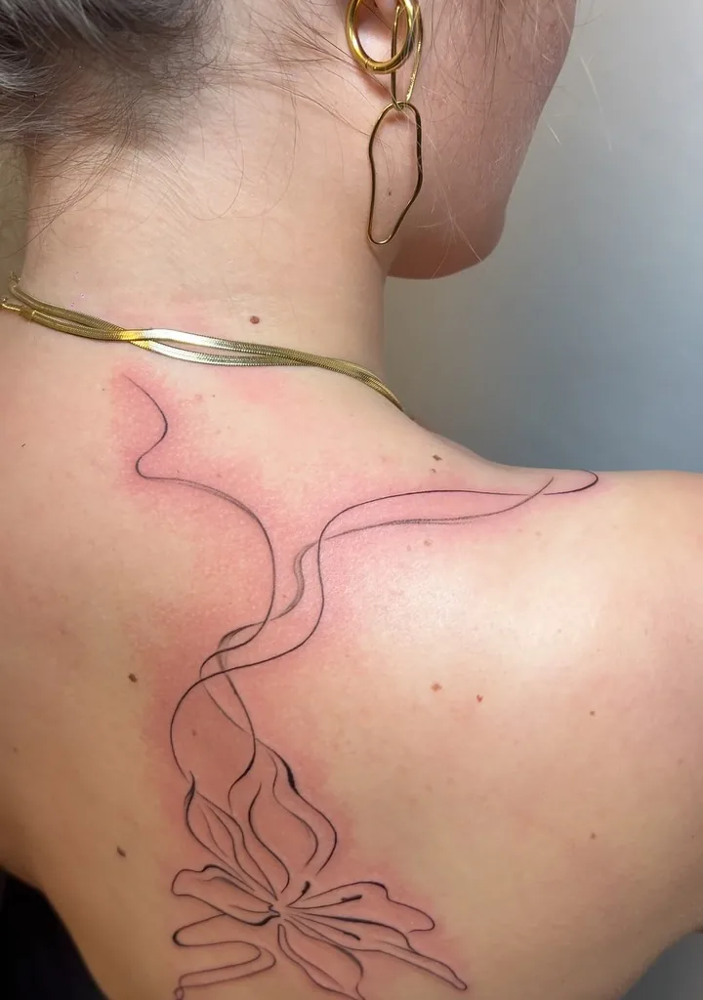
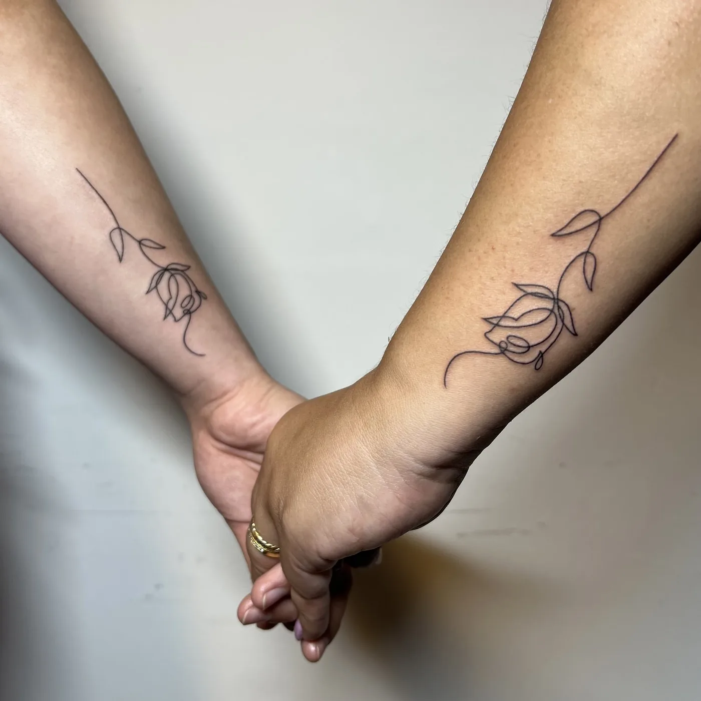
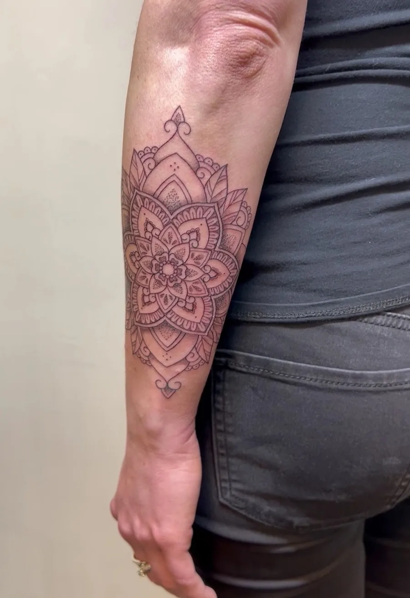
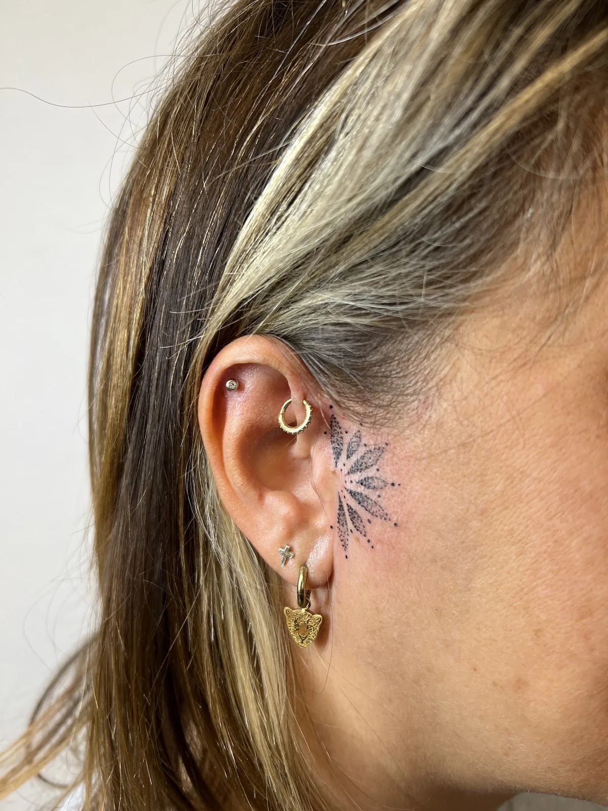
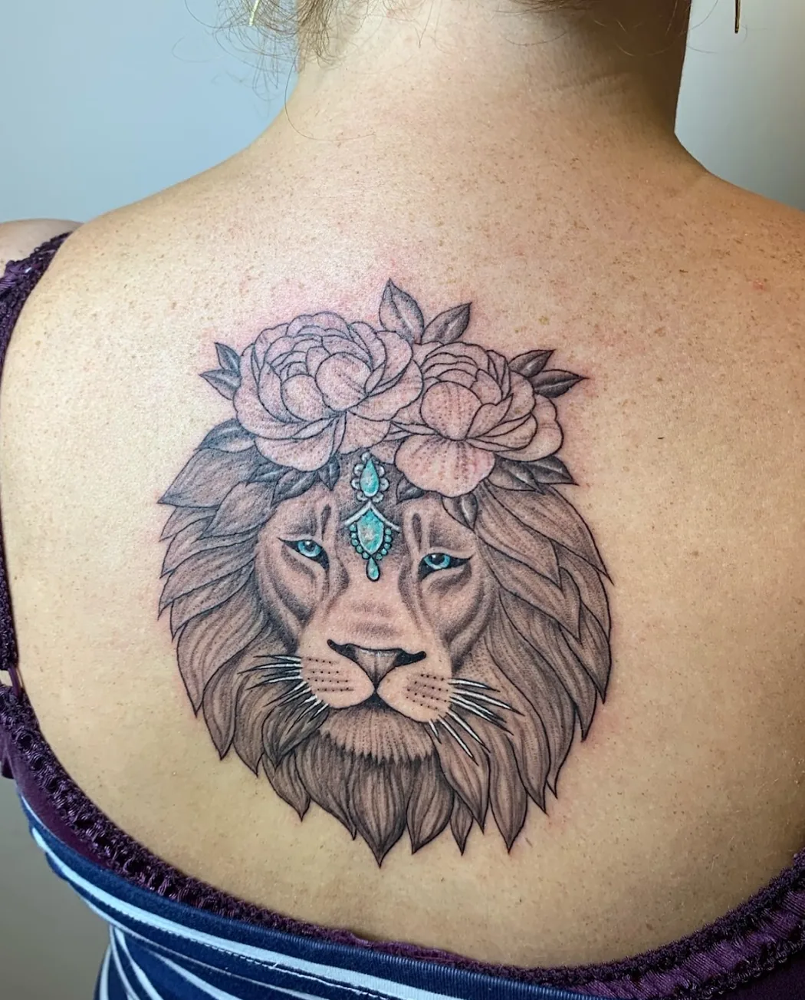
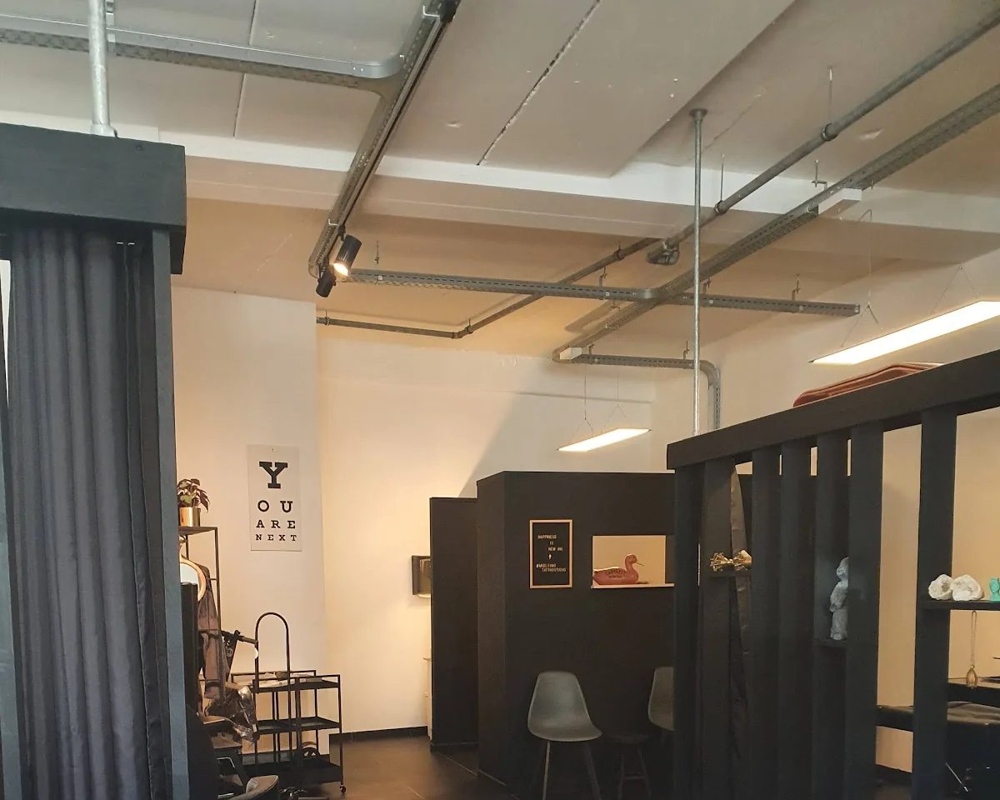
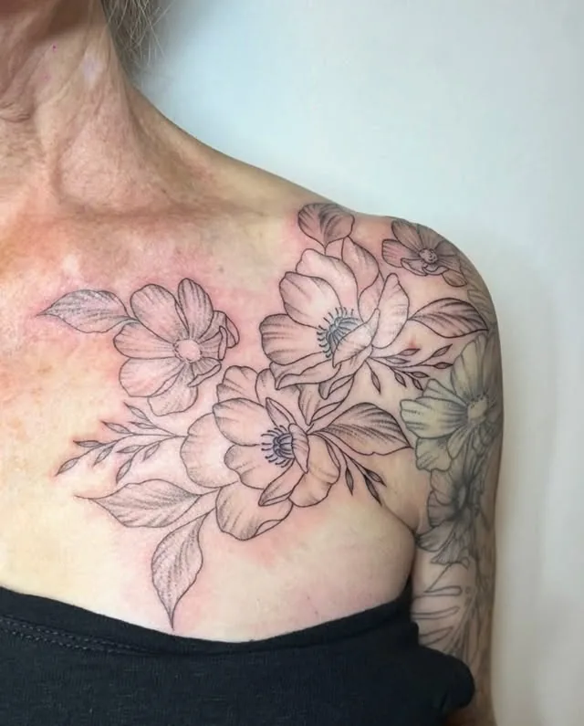
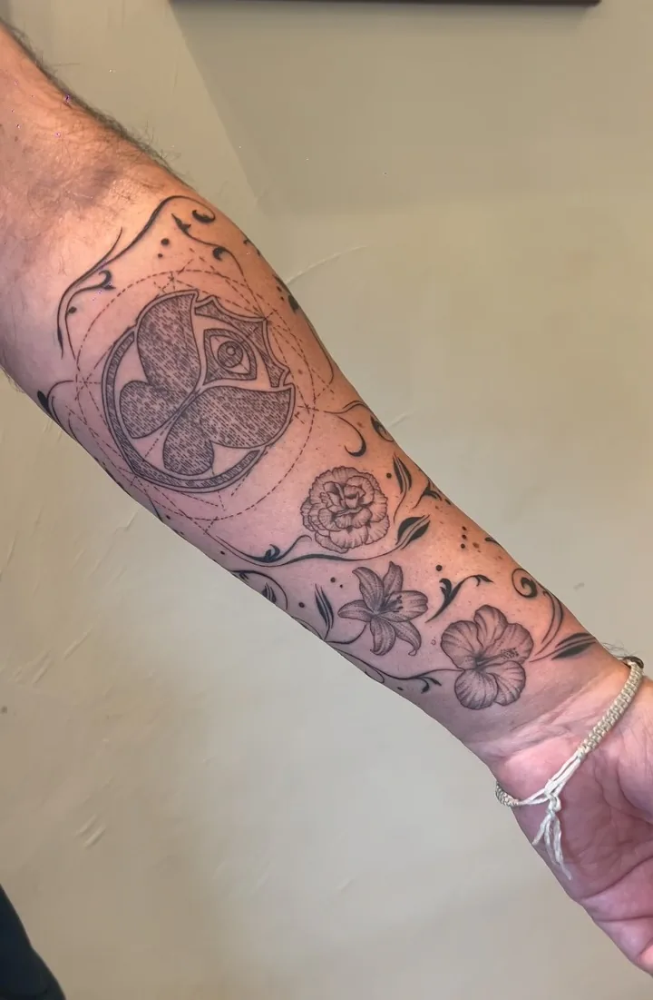
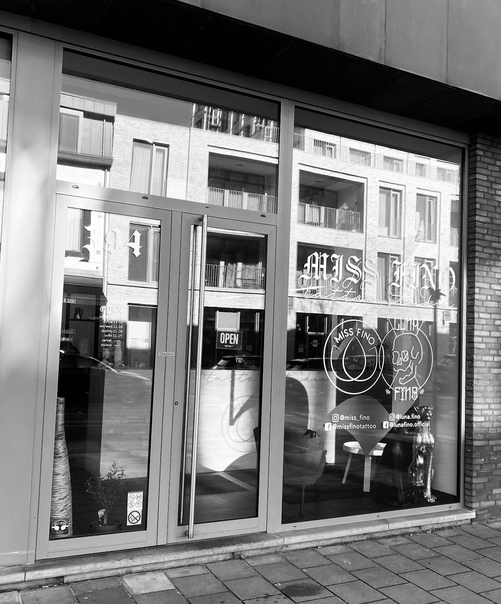

01
Fineline
Eén dunne naald, zachte lijnen. Ideaal voor een eerste tattoo.
Peggy en Luna zetten fineline, mandala's en dotwork in een rustige, vegan studio aan de Jules Moretuslei. Je komt binnen met een idee en je gaat buiten met iets dat helemaal van jou is.

Klein en fijn op je pols of een groot stuk over je rug. We tekenen elk ontwerp voor jou en zetten het rustig, lijn per lijn.

Eén dunne naald, zachte lijnen. Ideaal voor een eerste tattoo.

Symmetrie tot in het kleinste blad, mooi op arm, rug of been.

Opgebouwd uit duizenden puntjes, met een zachte schaduw.

Pioenen, rozen en ranken, alleen of rond een groter motief.
Een tattoo laten zetten is spannend, zeker de eerste keer. Daarom nemen we de tijd. We luisteren naar je verhaal, tonen je het ontwerp en zetten pas als het voor jou helemaal juist voelt.
Peggy werkt een deel van het jaar in het buitenland en opent haar agenda per drie maanden. Nu kan je terecht voor november, december en januari.



Elke zomer zet Peggy de officiële tattoos van Tomorrowland, op de festivalweide in Boom en in de Tomorrowland-store op Ibiza. Voor veel mensen begint het daar met een klein symbool, als herinnering aan een weekend dat ze nooit vergeten.
Soms groeit dat uit tot veel meer. Zo werd één festivaltattoo een jaar later een volledig stuk over de onderarm, met een bloem voor elk van zijn twee dochters.
"Aan iedereen die getatoeëerd werd, voor de eerste keer of de vijfde: dank je, uit de grond van mijn hart."Peggy, na weekend 1 van Tomorrowland 2026
"Een fantastische tatoeëerster met heel veel ervaring en heel heel hygiënisch. Ik ben 84 jaar en heb de naam van mijn overleden echtgenote laten zetten. Prachtig gedaan."
"Geweldige service en prachtig werk! Ik kom voor al mijn tattoo's naar hier. Ze luisteren naar wat je echt wilt en geven dat ook."
"Beide dames zijn super lief en ik voelde me enorm op mijn gemakje. Enorm propere shop en echt 2 fantastische tattoo artiesten. Ik blijf zeker terugkomen!"
Een afspraak maak je via een berichtje op Instagram. Je hoeft nog niet precies te weten wat je wil, daar zijn we voor.
Vertel wat je in gedachten hebt, waar het moet komen en hoe groot. Een foto of schets als voorbeeld helpt altijd.
Peggy of Luna werkt je idee uit tot een ontwerp dat past bij jou en bij de plek op je lichaam.
Op de dag zelf nemen we alles rustig door. Je gaat naar huis met duidelijke uitleg over de nazorg.
Stuur ons een bericht met je idee. We antwoorden zo snel we kunnen en zoeken samen een moment dat jou past.

Ik maakte deze demo voor jullie om te tonen wat er kan. Na een kort gesprek maak ik er iets veel persoonlijkers van, helemaal naar jullie wens.
Vrijblijvend. Ik kom langs of we bellen.
Op maat, op jullie eigen domein.
Geen voorschot. Jullie betalen pas als alles klaar is.
Hosting, domeinnaam en kleine wijzigingen, zoals nieuwe openingsuren.
Omdat een voorbeeld meer zegt dan een mail. Zo zien jullie meteen wat er kan, en het kost jullie niets.
Nee. Het gesprek is vrijblijvend. Vinden jullie het niks, dan is het daarmee gedaan.
Na ons gesprek staat jullie site binnen 10 tot 14 dagen online.
Zeker. Jullie domeinnaam kan gewoon blijven, de nieuwe site komt in de plaats van de oude.
Nee, dat doe ik op basis van ons gesprek. Eigen foto's zijn mooi meegenomen, maar niet nodig om te starten.